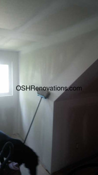

Renovations
|
Major Renovations are an art, especially when you are living in the home while the work is being carried out. Not every contractor has experience with keeping services available while working on them, nor with keeping your comfort level and sanity in mind. This apect of doing renovations has become the hallmark of my business. Because I can do all of the necessary work, there is less scheduling of sub-sontractors which leaves me with the peace of mind to provide your home and your sanity with the TLC it deserves.
Kitchens and Bathrooms:
Windows and doors |
|
|  |
Stairs and Railings Stone or Tile floors; or tubs and showers; or backsplashes are not the same. Floors and tubs/showers may need reinforcing of floors because of the extra weight. If this is not considered by a contractor, find another who does, or your work may need to be redone far before it's time. I have the knowledge and experience to give you the end result you desire that will last for many years to come. Cabinetry is an artform in itself. With near-zero tolerences, and an eye for good joinery, I build quality cabinets that outlast by far the factory made products that I am so often requested to install. By using good quality wood (no particle board or MDF), strong joining and custom select hardware, your custom cabinets will be unique, made to fit and will far outlast factory options. Landscaping and Curb Appeal are increasingly popular as neigborhoods evolve. Front decks, porches or walkways, plant, flowers or shrubbery as well as building color and themes are all important aspects of raising curb appeal. My landscaping designer/consultant will listen to your needs and desires and make recommendations based on these, and together you will provide me with a plan that I can implement. |